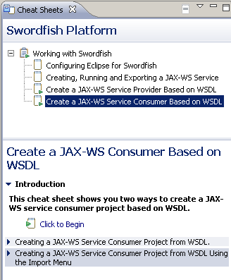

A template for the Swordfish target platform along with Swordfish runtime is now available. Using this template to create a new target definition, is the first step in using Swordfish.

Creating a JAX-WS service is very simple using the Swordfish menu. Clicking File > New > Project... > Swordfish > JAX-WS Service from Java starts the process.
The Swordfish menu helps to create a JAX-WS Service Provider or Consumer based on WSDL. Using the "WSDL First" approach, right-click the WSDL in your workspace and click Import.... Click Swordfish > JAX-WS Service Provider from WSDL or Swordfish > JAX-WS Service Consumer from WSDL.
")
Uploading a WSDL to Swordfish Service Registry has been made easy using a Swordfish context menu item Upload to Service Registry.
You can configure the URL to Swordfish Service Registry by clicking Windows > Preferences > Swordfish > Service Registry.

The Swordfish composite cheat sheet
 Working with Swordfish
helps the user through various steps to configure Eclipse for the
Swordfish target platform. It also helps to perform additional
steps like working with a simple JAX-WS service and creating a
JAX-WS service provider based on WSDL.
Working with Swordfish
helps the user through various steps to configure Eclipse for the
Swordfish target platform. It also helps to perform additional
steps like working with a simple JAX-WS service and creating a
JAX-WS service provider based on WSDL.
The individual steps consist of commands and wizards that can be launched automatically from the cheat sheet.
